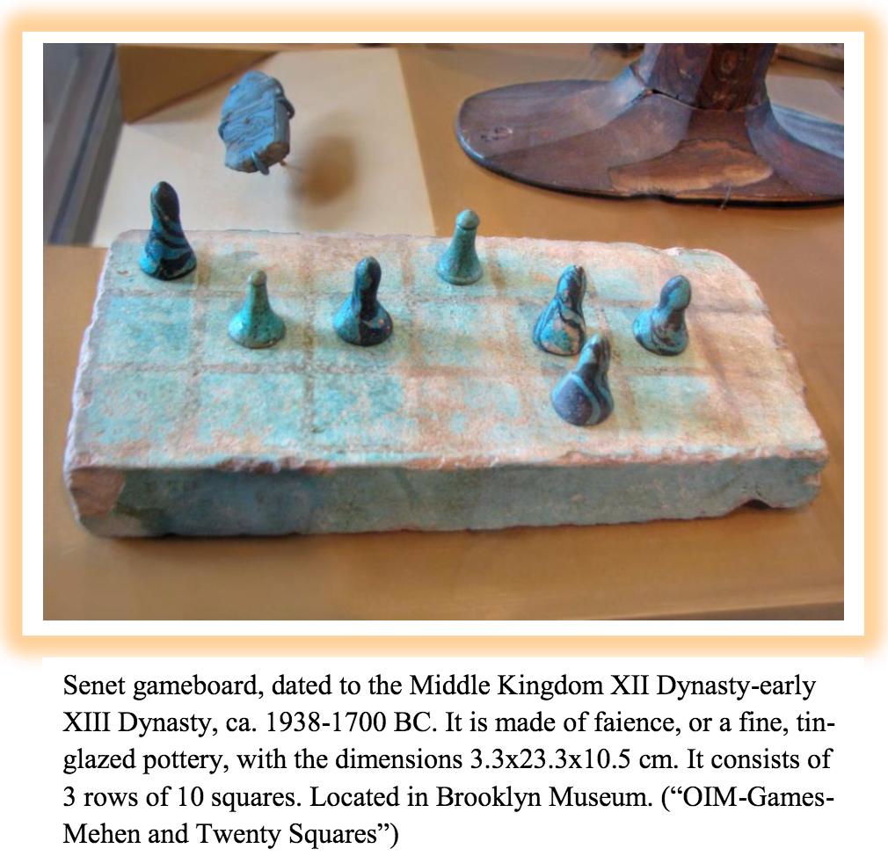
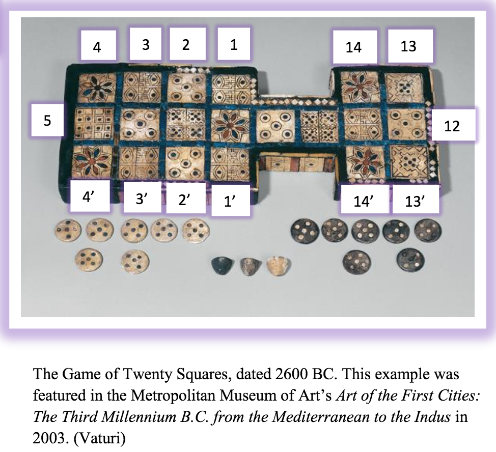
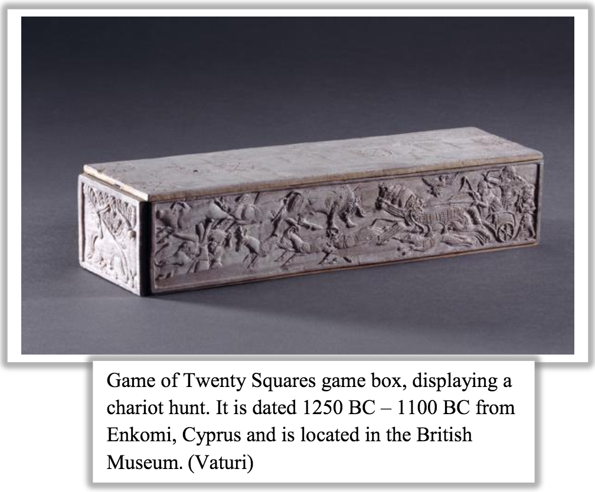
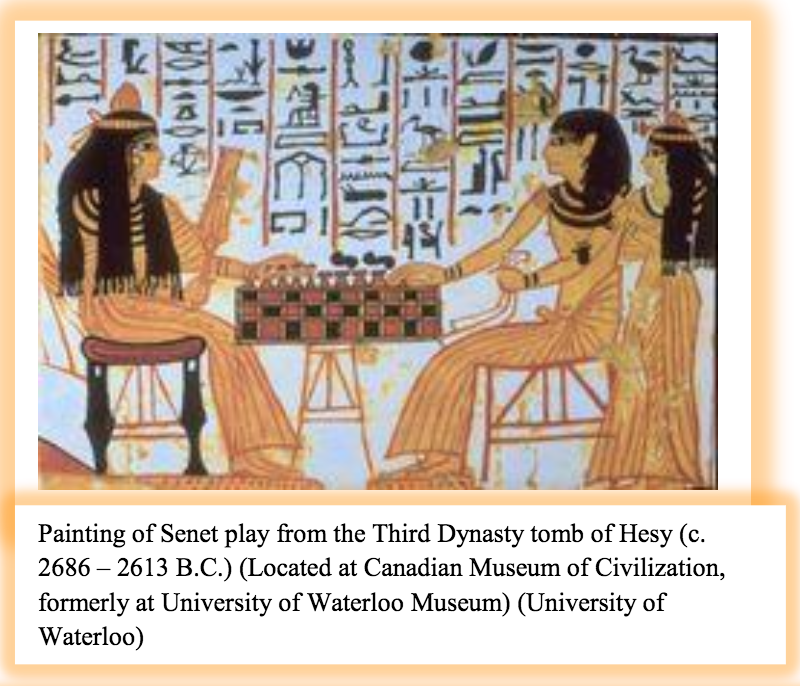
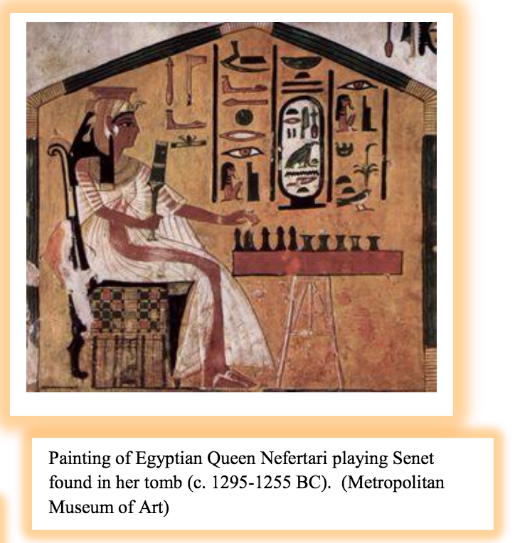

Introduction
Imagine: the ancient near east, a world in which gods ruled over cities(in the minds of the denizens, at any rate)andnear-constant warfare ravaged the boundaries of empires-it is enticingto immerse ourselves in a world that consistentlypromised such action.Considering that we are traveling back through time to the earliest recorded civilizations of mankind, there will understandably be many big players and moving piecesto consider as a writing system developed, literature flourished, and religious ideas were expounded upon. Upon closer inspection, however, there exist many parallels between present-day and ancientlife in theNear East. If we zoomin our focus past the impressive ziggurats and complex irrigation systems, we can see the importance of family, spirituality, and survival –values that resonate within our own modern society.
On an even more down-to-earth level, we might imagine that with all the stress of eking out an existence on the Alluvial Plain, the early citizens of the world must have needed a break sometimes. Thus, recreation manifests as another aspect of daily life that we may unsuspectingly share with our ancient counterparts. After all,who doesn’t like a good board game once in a while? As it turns out, board games form a fascinating part of the archaeological record and shed an astonishing amount of insight into iconography, religious life, and societal organization. Additionally, we can analyze the dynamics of cultural transmission–that is, how ancient cultures changed over time –throughour continuing studies of board games.
The Board Games of the Near East: Senet and the Game of Twenty Squares
Simply put, what board games did the ancient Mesopotamians play? While our knowledge of subject is largely incomplete, severalboard games have been identified and their rules conjectured. One majorly popularone was the Egyptian board gameSenet, for which we have more examples–from gameboardsto texts to reliefs –than any othergame in the region.In fact, there are somany remnants of Senet boardsandtomb depictions ofancients playing the gamethat for the ancient Egyptians, it was probably a “national pastime”(Hoerth474). Aptly translating to“the passing”in Egyptian, the ancients’love of Senet transcended geographical barriers. Indeed, it was played allover the ancient near eastacross several eras,from theOld Kingdomto as late as the Greco-Roman period (Hoerth 473).

Actually, on the backs of many Egyptian Senet boards wasanotherwildlypopular board game. In what is perhaps ourmost diverse and geographically widespread example, the Game of Twenty Squares has left behind over hundred artifacts of its enthusiastic use in Iraq, Iran, Israel, Syria, Jordan, Lebanon, Turkey, Cyprus, Egypt, and Crete (Finkel).Though modern historians havefondly dubbed it the Royal Game of Ur(dubbed such because of Sir Leonard Wooley’s famously extensive excavations of the game at the Royal Cemetery of Ur) the ancient name of the game was likely Tjau, which translates to “thieves” or “robbers” in Egyptian (Hoerth 476). Unlike the case of Senet, in which the exact gameplay is ambiguous, we do have a thorough understanding of the rules of the Game of Twenty Squares. That is because, amongthedozens of examples of the game board and accompaniments (dating from the mid-third millennium BC to themidpoint of the first millennium BC) in the archaeologicalrecord,we have excavated a convenientcuneiform tablet thatpresents the gameplay procedure!

Why Board Games?
Of course,there is much more to ancient board games than knowing their rules (many of which, in the absence of a handy cuneiform tablet, we cannot know for certain anyway). Consider the sheer spread of relevant artifacts at our disposal: we have found game boards of various sizes, etched on a wide array of materials (from graffiti on bricks or clay to finely crafted boxes), and of differing levels of detail (from crude tablets to fine specimens with expensive inlays) –all in tombs of people across the socioeconomic spectrum (Hoerth 488). Children and adults, as well as kings and commoners alike partook in this form of recreation, a testament to how ubiquitous such games were. As a result, we can think about board games as a unique way to gain insight about the people who played them; indeed, we can visualize the game boards as a “surface which could contain some of their ideas of the world” (Romain 1). In turn, we can analyze the interplay of iconography and spirituality, and then even draw conclusions about the interworkings of society from the simple act of ancient people playing a board game.
More Than Just Playing a Game: Aesthetics and Iconography
The visual images and symbols found on ancient board games foreshadow many connections between modernvaluesand those of our ancient counterparts. Although we should keep in mind certain limiting factors (designers of the game boards often had very little room to make decoration due to the dimension of the playing space, and the shape had to be conserved enough to be recognizable from model to model), we can still appreciate the important role of aesthetics in conveying spiritual beliefs. The most striking motif in many ancient game boards is the presence of animal representations or symbols which mark certain squares. For example, take a look at the following box for a Game of Twenty Squares board:

The sides of the box display a chariot hunt, featuring hunters on the right-hand side and gazelle-like animals fleeing on the left. This is representative of the decorations on many game boards or their containers: lions, bulls, gazelles, and other animals would appear on their own or as part of a hunt scene, as above (Romain 2). Additionally, the rosette symbol that frequents the squares of many boards (such as the Game of Twenty Squares board shown earlier) can be viewed as the stylized image of a number of gods, such as the “Great-god” (which, when appearing with a bull, can be Tesub, Adad, or Hadad), the goddess of fertility (referring to Isthar or Innana, when appearing with a tree or a goat symbol) or the Sun (when appearing with the lion or a star figure) (Romain 2). Considering that a large portion of game board artifacts were found in tombs, it seems safe to assume that game objects were important parts of religion and funerary ritual (Hoerth 474). Regardless of the sure-fire connections between game board designs and religion, however, iconography allows us to draw the following conclusion: aesthetics was used to achieve significance beyond the practice of the game. Perhaps the gameboards’ most profound Game of Twenty Squares game box, displaying a chariot hunt. It is dated 1250 BC –1100 BC from Enkomi, Cyprus and is located in the British Museum. (Vaturi)
function was the representation of other activities important to daily life, like religion and hunting.
Board Game Aesthetics as a Lens into Religion
One of the most deeply-held beliefs of ancient near easternsociety was that cosmic forces played an active role in organizing real life; even kings were seen as mere intermediaries between humans and the gods, who were the real builders and rulers of the cities. With this concept in mind, board games emulated bothreal life as well as these religious influences, as we can especially see in the aforementioned Egyptian game of Senet.Analyses of surviving game boards, annotated tomb representations, andtextsdepicting Senet play suggests that the game actually evolved from a secular diversion to a religious ritual.


The sequence of five marked squares at the end of the board may symbolize an abridged version of the journey of the dead, according to Egyptian religion. For instance, the thirtieth square at one point featured Re-Horakhty,the sun god who rose with the dawn(Piccione).The fact thatthis square wasprobably the end goal of the game symbolizedthe journey ofthe soul of the deceased to heaven, aided by a falcon in the solar ship of Re-Amun” (Romain 4). According to Kendall:
The encounters of a player with his opponent were seen as the encounters of his soul with the evil or inimical forces that lurked in the nether regions, and his victory was the attainment of the happy afterlife. A loss on the other hand, would seem to have meant utter annihilation and death without redemption. Now, more than ever, senet sets were buried with the dead not only for amusement but, more importantly perhaps, as symbols of their hoped-for resurrection and the difficult road to Paradise that was thought to lie before them.(Kendall)
In a broader sense, this may suggest that the board games were used as a communication tool between the worlds of the living and of the dead. Turning now to the Mesopotamian people, we can find a similar theme in game designs of the Game of Twenty Squares. The design and “unknown direction” of the board game –specifically, the fact that there were two possible directions from which to take out the pieces at the game’s end –may reflect the belief that the dead needed assistance to navigate the netherworld (Romain 4). Each of the game’s paths was almost identical, perhaps symbolizing a need for divination to determine the best method for traversing the two worlds (Romain 4).In a world inwhich abstract physical laws were nonexistent andthe fate of the peoplelay in the hands of capricious gods, board games represented a powerful tool for the ancientsto actout and divine the mysteries of the afterlife.
Board Games: A Reflection of Society
Society and social order comprise another intriguing perspective from which to view board games. As was hinted at earlier, it was the primary goal of kings in the ancient near east to
serve as intercessors of the gods, organizing society with laws and codes. In the same way that rulesand structure govern the conduct of board games, so too do the laws of society conduct the minutiae of daily life. It is also significant that, in every instance of a board game, there is one clear winner and loser; thus, board games manifested as a key way in which individuals could distinguish themselves in a non-violent manner (Romain 7). Also, much of the art depicting hunting motifs on game board designs likely symbolized this emphasis on justifying power. At the very least, the decorum on many games was an effective way of memorializing the heroic tales of kings (Romain 8).
Cultural Transmission: The Changing of Ancient Lives Over Time
Finally, fromreflections on general society, it is easy to make the jump to a broader, cultural analysis of board games. Specifically, we could use board games as a way to learn more about cultural transmission in the ancient near east. Cultural transmission models are a way to explain changes in cultures over time, focusing on how information is exchanged between individuals and the short-term and long-term outcomes of these exchanges (de Voogt, Dunn-Vaturi, Eerkens 1715). This theory “makes specific predictions about the temporal and spatial distributions of artifacts” in the archaeological record (de Voogt, et. al. 1716). Unlike many functional items that form the focus of cultural transmission studies (such as pottery, which is often modified significantly by individuals before information is transmitted to others), board games are played by multiple people at any given moment; therefore, this coordination “might hinder experimentation or modification before transmission” (de Voogt, etc. al. 1715). Studies of board games in this context have concluded that different diffusion patterns and rates of change exist for different board games (chess and games from the Roman empire were confined within the empire and changed dramatically across enemy borders; in contrast, other Near Eastern games spread across political borders without clear evidence of conquest) (de Voogt, et. al. 1728) Even so, games such as the Game of Twenty Squares provideus with important information about cultural contacts across geographical regions. For instance, the Game of Twenty Squares game boards found in the Royal cemetery of Ur and in the Shar-i Sokhta grave in Eastern Iran exemplify the long-distance trade and cultural contact that occurred between these widely separated areas. Also, when it was introduced to Egypt by the Hyksos (descendants of people from Western Asia), itsimmediatepopularitydemonstratedthe lively and positive relationship between Egypt and the Easter Mediterranean(de Voogt et. al. 1718).
Board Games: A Uniqueand PowerfulTool
On the whole, board games represent a multi-faceted way to better understand the citizens of the ancient world. Because they were accessible to everybody across the socioeconomic and political spectrum, ancient game boards like Senetand the Game of Twenty Squarestransform from a recreational diversion into a mirror that reflects their ideas about the world. Indeed, in many cases such games simultaneouslyembodied both a form of recreation and highly esteemed religiousritual.By analyzingthe aestheticsof board gameson an equal footing with gameplay, weglean invaluable insights into the spirituality and societal views of these ancient peoples-not to mention,fascinating waysto frame cultural transmissionin the region. Inthe process of doing so, weenrich the archaeological record with links between our modern age and the Near Ancient East, even down to the simplest concept: that human beings, even when they walk the earth3,000 yearsapart, are always up for some good fun.
Works Cited
Finkel, I.L. 2007b. “On the rules for the Royal Game of Ur”. In: Finkel, I.L. (Ed.), Ancient Board Games in Perspective. British Museum Press, London, pp. 16-32.
Hoerth, Alfred J.. ‘Games People Played: Board Games in the Ancient Near East.’ In R. E. Averbeck, M. Chavalas and D. B. Weisberg (eds.) Life and Culture in the Ancient Near East. Bethesda MD: CDL Press. 2003. Pp. 471-489.
Kendall, T. “Passing through the Netherworld: The Meaning and Play of Senet, an Ancient Egyptian Funerary Game”, The Kirk Game Company, Belmont.
Nina De Garis Davies | Queen Nefertari Playing Senet, Tomb of Nefertari |." The Collection Online. The Metropolitan Museum of Art. Web. 16 Nov. 2015. http://www.metmuseum.org/collection/the-collection-online/search/548355.
"OIM -Games -Mehen and Twenty Squares." OIM -Games -Mehen and Twenty Squares. Web. 11 Oct. 2015.http://www.joanannlansberry.com/fotoart/oim/mehen.html.
Piccione, Peter. "In Search of the Meaning of Senet." Elliott Avedon Virtual Museum of Games. University of Waterloo, 1Aug. 1980. Web. 15 Nov. 2015. http://www.gamesmuseum.uwaterloo.ca/Archives/Piccione/index.html.
Romain, Pascal. "Divination and Recreation in Ancient Near Eastern Board Games." Odyssey of Chess. Web. 11 Oct. 2015. http://history.chess.free.fr/papers/Romain 1999.pdf
Vaturi, Anne-Elizabeth."Twenty Squares: An Ancient Board Game." Twenty Squares: An Ancient Board Game. 9Dec. 2014. Web. 11 Oct. 2015. http://www.metmuseum.org/exhibitions/listings/2014/assyria-to-iberia/blog/posts/twenty-squares.
Voogt, Alex De, Anne-Elizabeth Dunn-Vaturi, and Jelmer W. Eerkens. "Cultural Transmissionin the Ancient Near East: Twenty Squares and Fifty-eight Holes." Journal of Archaeological Science 40 (2012): 1715-730. Journal of Archaeological Science. Web. 11 Oct. 2015. file:///C:/Users/Hayley/Downloads/de_Voogt_2013_-_JAS.pdf.